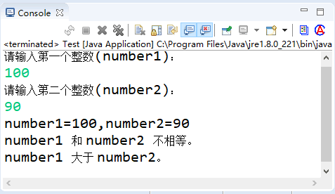

首页 > Java教程 > Java程序设计基础
Java关系运算符
关系运算符（relational operators）也可以称为“比较运算符”，用于用来比较判断两个变量或常量的大小。关系运算符是二元运算符，运算结果是 boolean 型。当运算符对应的关系成立时，运算结果是 true，否则是 false。
关系表达式是由关系运算符连接起来的表达式。关系运算符中“关系”二字的含义是指一个数据与另一个数据之间的关系，这种关系只有成立与不成立两种可能情况，可以用逻辑值来表示，逻辑上的 true 与 false 用数字 1 与 0 来表示。关系成立时表达式的结果为 true（或 1），否则表达式的结果为 false（或 0）。表 1 给出了比较运算符的含义及其实例应用。
注意点如下所示：
关系运算符的优先级为：>、<、>=、<= 具有相同的优先级，并且高于具有相同优先级的 !=、==。关系运算符的优先级高于赋值运算符而低于算术运算符，结合方向是自左向右。
关系表达式通常用于 Java 程序的逻辑判断语句的条件表达式中。使用关系表达式要注意以下几点：
下面是一些使用关系运算符的示例。
在本程序中，使用 input.nextInt() 接收用户从键盘输入的两个数，然后通过关系运算符来比较这两个数之间的大小。这里用到了 if 语句，它是一个流程控制语句，将在后面的章节中详细讲解。
关系表达式是由关系运算符连接起来的表达式。关系运算符中“关系”二字的含义是指一个数据与另一个数据之间的关系，这种关系只有成立与不成立两种可能情况，可以用逻辑值来表示，逻辑上的 true 与 false 用数字 1 与 0 来表示。关系成立时表达式的结果为 true（或 1），否则表达式的结果为 false（或 0）。表 1 给出了比较运算符的含义及其实例应用。
| 运算符 | 含义 | 说明 | 实例 | 结果 |
|---|---|---|---|---|
| > | 大于运算符 | 只支持左右两边操作数是数值类型。如果前面变量的值大于后面变量的值， 则返回 true。 | 2>3 | false |
| >= | 大于或等于运算符 | 只支持左右两边操作数是数值类型。如果前面变量的值大于等于后面变量的值， 则返回 true。 | 4>=2 | true |
| < | 小于运算符 | 只支持左右两边操作数是数值类型。如果前面变量的值小于后面变量的值，则返回 true。 | 2<3 | true |
| <= | 小于或等于运算符 | 只支持左右两边操作数是数值类型。如果前面变量的值小于等于后面变量的值， 则返回 true。 | 4<=2 | false |
| == | 相等运算符 |
如果进行比较的两个操作数都是数值类型，无论它们的数据类型是否相同，只要它们的值相等，也都将返回 true。 如果两个操作数都是引用类型，只有当两个引用变量的类型具有父子关系时才可以比较，只要两个引用指向的不是同一个对象就会返回 true。 Java 也支持两个 boolean 类型的值进行比较。 |
4==4 97=='a' 5.0==5 true==false |
true true true false |
| != | 不相等运算符 |
如果进行比较的两个操作数都是数值类型，无论它们的数据类型是否相同，只要它们的值不相等，也都将返回 true。 如果两个操作数都是引用类型，只有当两个引用变量的类型具有父子关系时才可以比较，只要两个引用指向的不是同一个对象就会返回 true。 |
4!=2 | true |
注意点如下所示：
- 基本类型的变量、值不能和引用类型的变量、值使用 == 进行比较；boolean 类型的变量、值不能与其他任意类型的变量、值使用 == 进行比较；如果两个引用类型之间没有父子继承关系，那么它们的变量也不能使用 == 进行比较。
- == 和 != 可以应用于基本数据类型和引用类型。当用于引用类型比较时，比较的是两个引用是否指向同一个对象，但当时实际开发过程多数情况下，只是比较对象的内容是否相当，不需要比较是否为同一个对象。
关系运算符的优先级为：>、<、>=、<= 具有相同的优先级，并且高于具有相同优先级的 !=、==。关系运算符的优先级高于赋值运算符而低于算术运算符，结合方向是自左向右。
关系表达式通常用于 Java 程序的逻辑判断语句的条件表达式中。使用关系表达式要注意以下几点：
-
运算符 >=、==、！=、<= 是两个字符构成的一个运算符，用空格从中分开写就会产生语法错误。例如
x> =y;是错误的，但是可以写成x >= y;在运算符的两侧增加空格会提高可读性。同样将运算符写反，例如 =>、=<、=! 等形式会产生语法错误。 - 由于计算机内存放的实数与实际的实数存在着一定的误差，如果对浮点数进行 ==（相等）或 !=（不相等）的比较，容易产生错误结果，应该尽量避免。
- 不要将“==”写成“=”。
下面是一些使用关系运算符的示例。
a > b // 比较变量a的值是否大于变量b的值 x+y> = z // 比较变量x与变量y的和是否大于或等于变量z的值 width * width+size != area // 比较变量width的平方加上变量size的值是否与变量area的值不相等 name == "zhht" // 比较变量name的值是否等于字符串nzht pass != "123456" // 比较变量pass的值是否不等于字符串“123456”
例 1
编写一个程序，使用户可以从键盘输入两个数，并判断这两个数之间的大小。 实现代码如下：
public static void main(String[] args) {
int number1, number2; // 定义变量，保存输入的两个数
System.out.print("请输入第一个整数(number1)：");
Scanner input = new Scanner(System.in);
number1 = input.nextInt(); // 输入第一个数
System.out.print("请输入第二个整数(number2)：");
input = new Scanner(System.in);
number2 = input.nextInt(); // 输入第二个数
System.out.printf("number1=%d,number2=%d\n", number1, number2); // 输出这两个数
// 判断用户输入的两个数是否相等
if (number1 == number2) {
System.out.println("number1 和 number2 相等。");
}
// 判断用户输入的两个数据是否相等
if (number1 != number2) {
System.out.println("number1 和 number2 不相等。");
// 判断用户输入的数1是否大于数2
if (number1 > number2) {
System.out.println("number1 大于 number2。");
}
// 判断用户输入的数1是否小于数2
if (number1 < number2) {
System.out.println("number1 小于 number2。");
}
}
}
保存程序并运行，运行结果如下所示：

图 1 运行结果
图 1 运行结果
在本程序中，使用 input.nextInt() 接收用户从键盘输入的两个数，然后通过关系运算符来比较这两个数之间的大小。这里用到了 if 语句，它是一个流程控制语句，将在后面的章节中详细讲解。
关注公众号「站长严长生」，在手机上阅读所有教程，随时随地都能学习。内含一款搜索神器，免费下载全网书籍和视频。

微信扫码关注公众号